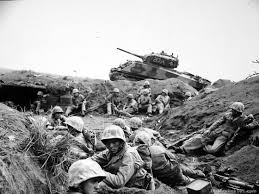
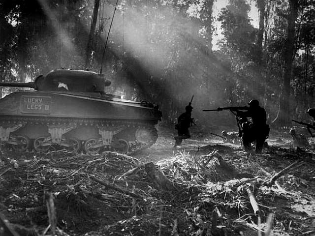

Drugi svjetski rat (1. rujna 1939. - 2. rujna 1945.) međunarodni je sukob koji je izbio 21 godinu nakon Prvog svjetskog rata.
Vođen je na tri kontinenta i na svim svjetskim oceanima, a u njemu su sudjelovale gotovo sve države koje su tada postojale.
Nakon što su Paktom Ribbentrop-Molotov i njegovim tajnim protokolom od 23. kolovoza 1939. godine (dan kojega je 2008. godine Europski parlament odredio Europskim danom sjećanja na žrtve svih totalitarnih i autoritarnih režima[1]) dogovorili Hitlerova Njemačka i Sovjetski Savez podjelu Istočne Europe, već dana 01. rujna 1939. godine Njemačka napada Poljsku; te se taj dan uzima kao početak 2. svjetskog rata.
Sovjetski Savez se pridružuje napadačkim aktivnostima 14. - 17. rujna 1939. godine, okupiravši oko pola teritorija Poljske (ti se teritoriji do danas nalaze u sastavu Bjelorusije i Ukrajine), te cjelokupne teritorije Latvije i Estonije.
Krajem 1941. nakon japanskog napada na Pearl Harbor Sjedinjene Američke Države se uključuju u rat koji konačno zahvaća gotovo čitav svijet.
Tijekom 1942. godine Japan bilježi znatne uspjehe oduzimajući Saveznicima golema područja u Aziji, od Indonezije i Filipina, do Burme i Singapura; u velikim pomorskim bitkama je međutim znatno oštećena snaga njegove flote čija obnova ne može pratiti tempo kojim američka industrija pridonosi izgradnji vojne sile SAD.
Nijemci uspješno izlaze na kraj s ofanzivama Crvene Armije prema Ukrajini i Britanskih snaga iz Egipta prema Libiji. Međutim s britanskog tla počinje ozbiljna aktivnost bombardiranja Njemačke i drugih područja Europe, što će s vremenom stvoriti devastirati industrijske, prometne i vojne kapacitete Njemačke i Italije.
Početkom 1943. trpe Sile Osovine velike poraze. Italija je prisiljena na kapitulaciju iste godine, sovjetske snage su na istočnom bojištu krenule u protunapad, a napredovanje japanskih snaga na Tihom oceanu je zaustavljeno.
Krajem 1943. godine zračne snage SAD pokreću kampanju masovnog bombardiranja Japana.
U ljeto 1944. zapadni Saveznici su se na Dan D iskrcali u Europi, polako privodeći rat kraju; upravo u isto vrijeme Crvena armija izvođenjem Oparacije Bagration napokon uspijeva rat prenijeti izvan predratnog područja SSSR-a.
Rat je okončan 1945. kapitulacijom Njemačke i Japana.

